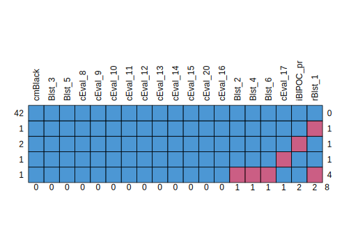
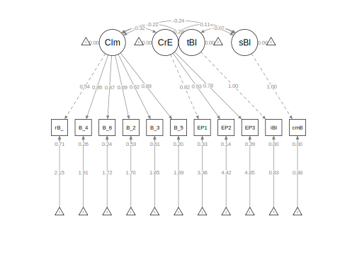
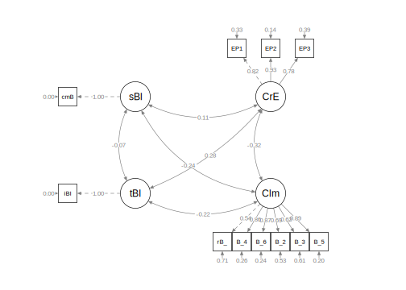
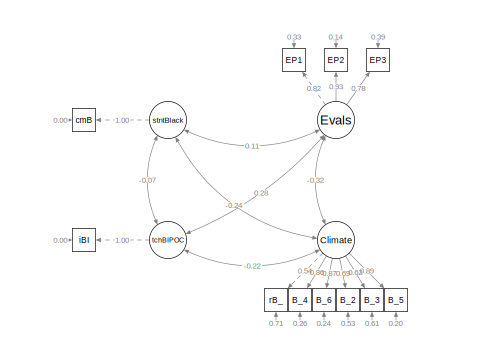
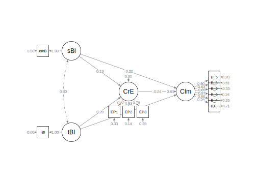
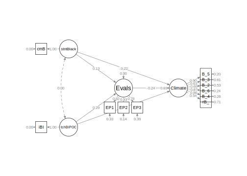

Psychometrics courses usually focus on evaluating the psychometric properties of an instrument and outlining the steps/procedures in instrument development. I believe it is also important to understand how to incorporate those psychometrically credible measures in research designs and particularly, SEM. Thus, the purpose of this lecture is to walk through a real dataset from missing data analysis to respecifying and settling on a final model.
Navigating this Lesson
There is about 1 hour and 45 minutes of lecture. If you work through the materials with me it would be plan for an additional two hours.
While the majority of R objects and data you will need are created within the R script that sources the chapter, occasionally there are some that cannot be created from within the R framework. Additionally, sometimes links fail. All original materials are provided at the Github site that hosts the book. More detailed guidelines for ways to access all these materials are provided in the OER’s introduction
Learning Objectives
Focusing on this week’s materials, make sure you can:
- Identify steps in preparing data for structural equation modeling
- Differentiate a measurement model from a structural model and know which one will have better fit
- List the general steps in evaluating a hybrid model
- Specify and interpret the results of a measurement model
- Define parceling and describe why it seems like “magic”
- Specify and interpret the results of a structural model
- Calculate the identification status (under-, just-, over-) in a structural model
Planning for Practice
In each of these lessons I provide suggestions for practice that allow you to select one or more problems that are graded in difficulty The least complex is to import the latest Rate-a-Recent-Course: A ReCentering Psych Stats Exercisedata from Qualtrics and rework the problem as written in the lesson. For an increased challenge, swap out one or more variables/scales. And for a maximal challenge, try something entirely new with data (similated or real) that you have permission to use.
Regardless of your choic(es) please work through the following:
- Structure up your dataframe.
- Analyze and manage missing data.
- Evaluate the assumptions for multivariate analysis.
- Conduct appropriate preliminary analyses.
- Specify and evaluate a measurement model.
- Respecify the measurement model with parcels.
- Specify and evaluate a structural model; tweak as necessary.
- Prepare an APA style results section with table(s) and figure(s).
- Explain it to somebody.
Readings & Resources
In preparing this chapter, I drew heavily from the following resource(s). Other resources are cited (when possible, linked) in the text with complete citations in the reference list.
Kline, R. (2016). Principles and practice of structural equation modeling (Fourth ed., Methodology in the social sciences). New York: The Guilford Press.
- Chapter 4, Data Preparation and Psychometrics Review
- Chapter 10, Specification and Identification of Structural Regression Models
- Chapter 11, Estimation and Local Fit Testing
- Chapter 13, Analysis of CFA Models
Little, T. D., Cunningham, W. A., Shahar, G., & Widaman, K. F. (2002). To parcel or not to parcel: Exploring the question, weighing the merits. Structural Equation Modeling, 9(2), 151–173. https://doi.org/10.1207/S15328007SEM0902_1
Little, T. D., Rhemtulla, M., Gibson, K., & Schoemann, A. M. (2013). Why the items versus parcels controversy needn’t be one. Psychological Methods, 18(3), 285–300. https://doi.org/10.1037/a0033266
Rosseel, Y. (2019). The lavaan tutorial. Belgium: Department of Data Analysis, Ghent University. http://lavaan.ugent.be/tutorial/tutorial.pdf
Packages
The packages used in this lesson are embedded in this code. When the hashtags are removed, the script below will (a) check to see if the following packages are installed on your computer and, if not (b) install them.
Research Vignette
The research vignette comes from the open survey titled, Rate-a-Recent-Course: A ReCentering Psych Stats Exercise. A series of lessons devoted to preparing data for analysis provide information about the specific variables and link to the codebook. They are available in the Multivariate Modelingvolume.
If you are 18 years or older and have recently taken any type of course (e.g., college, graduate, continuing education), please consider taking the survey. Each time someone responds to the survey, it will allow users to follow along with a slightly different datasea.
The Rate-a-Recent-Course has a number of scales and variables. We will use four variables/scales to specify a parallel mediation predicting the perceptions of campus climate for students who are Black from the percent of classmates who are Black, the proportion of instructional staff who are BIPOC (Black, Indigenous, and Persons of Color), and course evaluation ratings that assess the degree to which the pedagogy is socially and culturally responsive
 Variables in the model:
Variables in the model:
- Perceived Campus Climate for Black Students includes 6 items, one of which was reverse scored. This scale was adapted from Szymanski et al.’s (2020) Campus Climate for LGBTQ students. It has not been evaluated for use with other groups. The Szymanski et al. analysis suggested that it could be used as a total scale score, or divided into three items each that assess the college’s response and experienced stigma. Items were assessed on a 7-point scale ranging from strongly disagree to strongly agree with higher scores indicating a more hostile campus climate. Example items from our revised scale include:
- College response: “My college is unresponsive to the needs of Black students.”
- Stigma: “Anti-Black racism is visible in my college.”
- Course evaluation items assessed the the degree to which the pedagogy of course course reviewed by the respondent was socially and culturally responsive. In developing this survey, we chose items after reviewing evaluation items from several institutions of higher education and reviewing evaluative tools for open education resources. Eleven items were assessed on a 5-point scale ranging from strongly disagree to strongly agree with higher scores indicating a more positive evaluation of the course. Example items include:
- “Course content included materials authored by members of communities that are often marginalized (e.g., BIPOC, LGBTQ+, emerging economies).”
- “A land acknowledgement was made (i.e., formal statement naming the indigenous people who originally inhabited the land).”
- “Course materials (e.g., textbooks, articles, videos/podcasts) were free/no-cost to the students.”
- Percent of Black classmates was a single item that asked respondents to estimate the proportion of students in various racial categories.
- Percent of BIPOC instructional staff, similarly, asked respondents to identify the racial category of each member of their instructional staff.
Our design has notable limitations. Briefly, (a) owing to the open source aspect of the data we do not ask about the demographic characteristics of the respondent; (b) the items that ask respondents to guess the identities of the instructional staff and to place them in broad categories, (c) we do not provide options for “write-in” responses. We made these decisions after extensive conversation with stakeholders. The primary reason for these decisions was to prevent potential harm (a) to respondents who could be identified if/when the revealed private information in this open-source survey, and (b) trolls who would write inappropriate or harmful comments.
I would like to assess the model by having the instructional staff variable to be the %Black instructional staff. At the time that this lecture is being prepared, there is not sufficient Black representation in this variable to model this.
Importing and Preparing the Data
Three chapters in the Multivariate Modeling volume of ReCentering Psych Stats provide greater detail about the process of importing and preparing data from the Rate-a-Recent-Course: A ReCentering Psych Stats Exercise survey.
We start with an intRavenous import directly from Qualtrics. This is a two-step process.
- Establishing a connection to the Qualtrics account by supplying the base URL and API credentials.
- Be very careful with these, they provide access to everything in your Qualtrics account. This Qualtrics account has only this survey and nothing else.
- If the API token becomes operational, please let me know. Qualtrics security may have a protocol to replace/disable them.
- Naming the survey (via its identification number) and importing the results.
#The hashtagged line of code makes the connection to the institution's Qualtrics account and the individual Qualtrics account within that institutional brand. Once that connection is made, hashtag it out to avoid glitches. If you are changing from one account to another you will likely need to restart R.
#qualtRics::qualtrics_api_credentials(api_key = "mUgPMySYkiWpMFkwHale1QE5HNmh5LRUaA8d9PDg",
#base_url = "spupsych.az1.qualtrics.com", overwrite = TRUE, install = TRUE)
#surveys <- qualtRics::all_surveys()
#QTRX_df <-qualtRics::fetch_survey(surveyID = "SV_b2cClqAlLGQ6nLU", time_zone = NULL, verbose = FALSE, label=FALSE, #convert=FALSE, force_request = TRUE, import_id = FALSE)
In the next set of code, I quickly prepare the data that I will use for the hybrid SEM. In the next set of script we:
- Delete “previews” (those “tester” surveys taken prior to the official launch).
- Rename a few variables to make them easier to manipulate.
- Most variable naming was completed inside the Qualtrics survey, prior to importing, but some variables were impossible to rename and we did not anticipate all of our needs.
- Create an ID number for each case and moving it to the front of the dataframe.
- Create a df that includes only the variables needed to specify the hybrid model.
#eliminating previews
#QTRX_df <- dplyr::filter (QTRX_df, DistributionChannel != "preview")
#renaming variables that start with numbers
#QTRX_df <- dplyr::rename(QTRX_df, iRace1 = '1_iRace', iRace2 = '2_iRace', iRace3 = '3_iRace', iRace4 = '4_iRace', iRace5 = '5_iRace', iRace6 = '6_iRace', iRace7 = '7_iRace', iRace8 = '8_iRace', iRace9 = '9_iRace', iRace10 = '10_iRace')
#renaming variables about classmates race/ethnicity
#QTRX_df <- dplyr::rename(QTRX_df, cmBiMulti = Race_10, cmBlack = Race_1, cmNBPoC = Race_7, cmWhite = Race_8, cmUnsure = Race_2)
library(tidyverse)#opening this package to be able to use pipes
#creating ID variable and moving it to the front
#QTRX_df <- QTRX_df %>% dplyr::mutate(ID = row_number())
#QTRX_df <- QTRX_df%>%dplyr::select(ID, everything())
#downsizing df to have just variables of interest
#Model_df <-(select (QTRX_df, ID, iRace1, iRace2, iRace3, iRace4, iRace5, iRace6, iRace7, iRace8, iRace9, iRace10, cmBiMulti, cmBlack, cmNBPoC, cmWhite, cmUnsure, Blst_1:Blst_6, cEval_8, cEval_9, cEval_10, cEval_11, cEval_12, cEval_13, cEval_14, cEval_15, cEval_20, cEval_16,cEval_17))
The optional script below will let you save the imported data to your computing environment as either a .csv file (think “Excel lite”) or .rds object (preserves any formatting you might do). If you save the .csv file and bring it back in, you will lose any formatting (e.g., ordered factors will be interpreted as character variables).
An .rds file preserves all formatting to variables prior to the export and re-import. For the purpose of this chapter, you don’t need to do either. That is, you can re-simulate the data each time you work the problem.
As a multicategorical variable, race/ethnicity frequently takes some thought and manipulation. I would have liked to have evaluated instructor race as the proportion of the instructional staff who is Black. At this time, there is so little variability in the instructional staff variable that we are using proportion of instructional staff who is BIPOC.
Given that classes may be teamtaught (and/or include teaching assistants) in the survey, respondents indicated how many instructional staff taught their class. For each, the respondent indicated the race/ethnicity of the instructor. It was possible to list up to 10 instructors per class. We need to get these 10 responses summarized as one variable representing the proportion of instructional faculty (per respondent/class) who were BIPOC. The code below:
- Transforms each race identification variable into a factor.
- Calculates the proportion of BIPOC instructional faculty for each respondent’s class.
#str(Model_df$iRace1)
Model_df$tRace1 = factor(Model_df$iRace1,
levels = c(0,1,2,3,4),
labels = c("Black", "nBpoc", "BiMulti", "White", "NotNotice"))
Model_df$tRace2 = factor(Model_df$iRace2,
levels = c(0,1,2,3,4),
labels = c("Black", "nBpoc", "BiMulti", "White", "NotNotice"))
Model_df$tRace3 = factor(Model_df$iRace3,
levels = c(0,1,2,3,4),
labels = c("Black", "nBpoc", "BiMulti", "White", "NotNotice"))
Model_df$tRace4 = factor(Model_df$iRace4,
levels = c(0,1,2,3,4),
labels = c("Black", "nBpoc", "BiMulti", "White", "NotNotice"))
Model_df$tRace5 = factor(Model_df$iRace5,
levels = c(0,1,2,3,4),
labels = c("Black", "nBpoc", "BiMulti", "White", "NotNotice"))
Model_df$tRace6 = factor(Model_df$iRace6,
levels = c(0,1,2,3,4),
labels = c("Black", "nBpoc", "BiMulti", "White", "NotNotice"))
Model_df$tRace7 = factor(Model_df$iRace7,
levels = c(0,1,2,3,4),
labels = c("Black", "nBpoc", "BiMulti", "White", "NotNotice"))
Model_df$tRace8 = factor(Model_df$iRace8,
levels = c(0,1,2,3,4),
labels = c("Black", "nBpoc", "BiMulti", "White", "NotNotice"))
Model_df$tRace9 = factor(Model_df$iRace9,
levels = c(0,1,2,3,4),
labels = c("Black", "nBpoc", "BiMulti", "White", "NotNotice"))
Model_df$tRace10 = factor(Model_df$iRace10,
levels = c(0,1,2,3,4),
labels = c("Black", "nBpoc", "BiMulti", "White", "NotNotice"))
#checking to see that they are factors
#glimpse(Model_df)
#counting non-White instructional staff by creating the variable "count.BIPOC" by
#summing across tRace1 thru tRace10 and assigning a count of "1" each time the factor value was Black, nBpoc, or BiMulti
Model_df$count.BIPOC <- apply(Model_df[c("tRace1", "tRace2", "tRace3", "tRace4", "tRace5", "tRace6", "tRace7", "tRace8", "tRace9", "tRace10")], 1, function(x) sum(x %in% c("Black", "nBpoc", "BiMulti")))
#created a variable that counted the number of non-missing values across the tRace1 thru tRace10 vars
Model_df$count.nMiss <- apply(Model_df[c("tRace1", "tRace2", "tRace3", "tRace4", "tRace5", "tRace6", "tRace7", "tRace8", "tRace9", "tRace10")], 1, function(x) sum(!is.na(x)))
#calculate proportion of BIPOC instructional faculty for each case
Model_df$iBIPOC_pr = Model_df$count.BIPOC/Model_df$count.nMiss
The scale assessing perceptions of campus climate for Black students had six items. One was worded in the opposite direction of the rest, therefore we must reverse-score it. Following the reverse-coding, I once again trimmed the dataframe so that it includes only the variables we need for the next step.
Analyzing and Managing Missingness
The series of lessons on data preparation in the Multivariate Modeling volume provide a more detailed review of analyzing and managing missing data. Much of the script below is copied from those lessons and my review and explaination in this lesson is significantly shorter.
Structual equation models lend themselves to managing missing data with Parent’s (2013) available information analysis (AIA) approach. My approach is to:
- Create a dataframe that includes only the variables that will be used in the analysis.
- Delete all cases with greater than 20% missingness.
- If scale scores (or parcels) are used, calculate them if ~80% of the data for the calculation is present.
- Use the full information maximum likelihood (FIML) estimation procedure in lavaan; this allows item-level missingness.
[1] 70
vars n mean sd median trimmed mad min max range skew kurtosis se
X1 1 70 27.48 40.41 0 23.04 0 0 90.48 90.48 0.87 -1.2 4.83
[1] 0
[1] 90
[1] 26.23%
[1] 60.00%
Our initial inspection of the data indicated that 70 attempted the survey. The proportion of missingness in the responses ranged from 0 to 90. Across the dataframe there was 26.23% of missingness across the cells. Approximately 60.00% of the cases had nonmissing data.
Let’s conduct an analysis of missingness with the mice::md.pattern() function.

ID n_miss prop_miss cmBlack cEval_8 cEval_12 cEval_13 cEval_14 cEval_16
42 1 1 1 1 1 1 1 1 1
1 1 1 1 1 1 1 1 1 1
1 1 1 1 1 1 1 1 1 1
1 1 1 1 1 1 1 1 1 1
1 1 1 1 1 1 1 1 1 1
1 1 1 1 1 1 1 1 1 1
1 1 1 1 1 1 1 1 1 1
2 1 1 1 1 1 1 1 1 1
1 1 1 1 0 0 0 0 0 0
19 1 1 1 0 0 0 0 0 0
0 0 0 20 20 20 20 20 20
iBIPOC_pr cEval_9 cEval_10 cEval_15 cEval_20 cEval_17 Blst_2 Blst_3 Blst_5
42 1 1 1 1 1 1 1 1 1
1 1 1 1 1 1 1 1 1 1
1 1 1 1 1 1 1 0 1 1
1 1 1 1 1 1 1 0 0 0
1 1 1 1 1 1 0 1 1 1
1 1 1 1 0 0 1 1 1 0
1 1 0 0 1 1 1 1 0 1
2 0 1 1 1 1 1 1 1 1
1 1 0 0 0 0 0 0 0 0
19 0 0 0 0 0 0 0 0 0
21 21 21 21 21 21 22 22 22
Blst_6 cEval_11 Blst_4 rBlst_1
42 1 1 1 1 0
1 1 1 1 0 1
1 0 1 0 0 4
1 0 1 0 0 6
1 1 1 1 1 1
1 1 0 1 0 5
1 1 0 0 0 6
2 1 1 1 1 1
1 0 0 0 0 18
19 0 0 0 0 19
22 22 23 25 404
We need to decide what is our retention threshhold. Twenty percent seems to be a general rule of thumb. Let’s delete all cases with missingness at 20% or greater.
[1] 47
We should check the missingness characteristics again.
[1] 0.90%
[1] 89.36%

cmBlack Blst_3 Blst_5 cEval_8 cEval_9 cEval_10 cEval_11 cEval_12 cEval_13
42 1 1 1 1 1 1 1 1 1
1 1 1 1 1 1 1 1 1 1
2 1 1 1 1 1 1 1 1 1
1 1 1 1 1 1 1 1 1 1
1 1 1 1 1 1 1 1 1 1
0 0 0 0 0 0 0 0 0
cEval_14 cEval_15 cEval_20 cEval_16 Blst_2 Blst_4 Blst_6 cEval_17 iBIPOC_pr
42 1 1 1 1 1 1 1 1 1
1 1 1 1 1 1 1 1 1 1
2 1 1 1 1 1 1 1 1 0
1 1 1 1 1 1 1 1 0 1
1 1 1 1 1 0 0 0 1 1
0 0 0 0 1 1 1 1 2
rBlst_1
42 1 0
1 0 1
2 1 1
1 1 1
1 0 4
2 8
Our initial inspection of the data indicated that 70 attempted the survey. The proportion of missingness in the responses ranged from 0 to 90. Across the dataframe there was 26.23% of missingness across the cells. Approximately 60.00% of the cases had nonmissing data. The predominant pattern of missingness included individuals opening the survey without completing any of the items. Beyond that, our inspection of a missingness map indicated a haphazard pattern of missingness (Enders, 2010).
We reinspected the missingness of the 47 dataset. Across the dataframe there was 0.90% of missingness across the cells. Approximately 89.36% of the cases had nonmissing data.
Assessing the Distributional Characteristics of the Data
vars n mean sd median trimmed mad min max range skew kurtosis
iBIPOC_pr 1 45 0.33 0.40 0.25 0.30 0.37 0 1 1 0.76 -1.06
cmBlack 2 47 6.66 7.64 5.00 5.46 7.41 0 29 29 1.29 0.85
rBlst_1 3 45 3.42 1.60 3.00 3.35 1.48 1 7 6 0.48 -0.60
Blst_2 4 46 2.67 1.59 2.00 2.58 1.48 1 6 5 0.30 -1.42
Blst_3 5 47 2.11 1.29 2.00 1.95 1.48 1 6 5 1.06 0.25
Blst_4 6 46 2.35 1.25 2.00 2.24 1.48 1 5 4 0.61 -0.80
Blst_5 7 47 2.00 1.20 2.00 1.87 1.48 1 5 4 0.89 -0.58
Blst_6 8 46 2.26 1.34 2.00 2.08 1.48 1 6 5 0.99 0.04
cEval_8 9 47 4.30 0.83 4.00 4.44 1.48 1 5 4 -1.69 3.98
cEval_9 10 47 3.81 1.06 4.00 3.87 1.48 2 5 3 -0.49 -1.00
cEval_10 11 47 4.00 0.98 4.00 4.13 1.48 1 5 4 -0.96 0.53
cEval_11 12 47 3.40 1.15 3.00 3.41 1.48 1 5 4 0.02 -1.21
cEval_12 13 47 3.85 1.27 4.00 3.97 1.48 1 5 4 -0.73 -0.83
cEval_13 14 47 3.83 1.05 4.00 3.97 0.00 1 5 4 -1.21 1.18
cEval_14 15 47 3.72 1.36 4.00 3.87 1.48 1 5 4 -0.97 -0.30
cEval_15 16 47 3.26 1.19 3.00 3.31 1.48 1 5 4 -0.41 -0.78
cEval_20 17 47 3.55 1.14 4.00 3.67 1.48 1 5 4 -0.73 -0.10
cEval_16 18 47 3.13 1.30 3.00 3.15 1.48 1 5 4 -0.23 -1.11
cEval_17 19 46 2.67 1.43 2.00 2.61 1.48 1 5 4 0.35 -1.31
se
iBIPOC_pr 0.06
cmBlack 1.11
rBlst_1 0.24
Blst_2 0.23
Blst_3 0.19
Blst_4 0.18
Blst_5 0.17
Blst_6 0.20
cEval_8 0.12
cEval_9 0.15
cEval_10 0.14
cEval_11 0.17
cEval_12 0.18
cEval_13 0.15
cEval_14 0.20
cEval_15 0.17
cEval_20 0.17
cEval_16 0.19
cEval_17 0.21
Regarding the distributional characteristics of the data, skew and kurtosis values of the variables fell below the values of 3 (skew) and 8 to 20 (kurtosis) that Kline suggests are concerning (2016).
# A tibble: 1 x 2
MOutlier n
<lgl> <int>
1 FALSE 47
MOutlier n
1 47 0
MOutlier n
1 47 0
# A tibble: 6 x 21
iBIPOC_pr cmBlack rBlst_1 Blst_2 Blst_3 Blst_4 Blst_5 Blst_6 cEval_8 cEval_9
<dbl> <dbl> <dbl> <dbl> <dbl> <dbl> <dbl> <dbl> <dbl> <dbl>
1 1 0 NA NA 2 NA 2 NA 5 4
2 0 5 2 6 2 2 4 1 5 5
3 NaN 5 4 5 4 5 3 4 4 4
4 NaN 14 3 4 1 3 1 2 4 3
5 0.25 0 NA 1 1 1 1 1 4 5
6 0.333 0 3 3 5 2 2 2 5 5
# ... with 11 more variables: cEval_10 <dbl>, cEval_11 <dbl>, cEval_12 <dbl>,
# cEval_13 <dbl>, cEval_14 <dbl>, cEval_15 <dbl>, cEval_20 <dbl>,
# cEval_16 <dbl>, cEval_17 <dbl>, Mahal <dbl>, MOutlier <lgl>
We evaluated multivariate normality with the Mahalanobis distance test. Specifically, we used the outlier() function in the psych package and included all continuous variables in the calculation. Our visual inspection of the Q-Q plot suggested that the plotted line strayed from the straight line as the quantiles increased. Additionally, we appended the Mahalanobis distance scores as a variable to the data. Analyzing this variable, we found that 0 exceed three standard deviations beyond the median. Thus, with no outliers, we assumed multivariate normality and proceeded with the data analysis AS DATA IS ADDED THIS NUMBER OF OUTLIERS COULD UPDATE FROM ZERO AND THIS TEXT COULD CHANGE.
Preliminary Analyses
Internal Consistency Coefficients
Most research projects start with some preliminary statistics. Even though we will be using item-level data in our hybrid model, for any instruments that are scales, we typically compute internal consistency coefficients and include these values in the last sentence of in the description of the respective measure. In this example we used two scales: Perceptions of the Campus Climate for Black Students and the Course Evaluation items that evaluated the degree to which the pedagogy was socially and culturally responsive. A more thorough description of internal consistency coefficients are found in the reliability chapter of this volume.
My process for calculating alpha coefficients is to first create a subset of item-level data that is consistently scaled in the same direction. That is, reverse score any items before creating the subset of data.
ClimateItems <- dplyr::select(Model_df, rBlst_1, Blst_2, Blst_3, Blst_4, Blst_5, Blst_6)
CEvalItems <- dplyr::select(Model_df, cEval_8, cEval_9, cEval_10, cEval_11, cEval_12, cEval_13, cEval_14, cEval_15, cEval_16, cEval_17, cEval_20)
Next, in separate analyses, we apply the psych::alpha() function to the scale items.
Reliability analysis
Call: psych::alpha(x = ClimateItems)
raw_alpha std.alpha G6(smc) average_r S/N ase mean sd median_r
0.87 0.88 0.88 0.55 7.5 0.029 2.5 1.1 0.53
lower alpha upper 95% confidence boundaries
0.82 0.87 0.93
Reliability if an item is dropped:
raw_alpha std.alpha G6(smc) average_r S/N alpha se var.r med.r
rBlst_1 0.88 0.89 0.89 0.62 8.2 0.027 0.017 0.60
Blst_2 0.86 0.87 0.86 0.57 6.6 0.034 0.026 0.53
Blst_3 0.87 0.88 0.87 0.60 7.4 0.031 0.021 0.57
Blst_4 0.83 0.84 0.84 0.52 5.4 0.039 0.019 0.51
Blst_5 0.83 0.84 0.83 0.50 5.1 0.040 0.018 0.47
Blst_6 0.83 0.84 0.83 0.52 5.4 0.039 0.020 0.48
Item statistics
n raw.r std.r r.cor r.drop mean sd
rBlst_1 45 0.68 0.66 0.54 0.51 3.4 1.6
Blst_2 46 0.78 0.77 0.70 0.65 2.7 1.6
Blst_3 47 0.69 0.71 0.61 0.57 2.1 1.3
Blst_4 46 0.86 0.86 0.85 0.79 2.3 1.3
Blst_5 47 0.88 0.90 0.90 0.84 2.0 1.2
Blst_6 46 0.86 0.87 0.86 0.79 2.3 1.3
Non missing response frequency for each item
1 2 3 4 5 6 7 miss
rBlst_1 0.09 0.24 0.22 0.22 0.09 0.09 0.04 0.04
Blst_2 0.37 0.15 0.09 0.24 0.13 0.02 0.00 0.02
Blst_3 0.43 0.30 0.09 0.15 0.02 0.02 0.00 0.00
Blst_4 0.30 0.33 0.15 0.15 0.07 0.00 0.00 0.02
Blst_5 0.47 0.28 0.06 0.17 0.02 0.00 0.00 0.00
Blst_6 0.35 0.35 0.11 0.11 0.07 0.02 0.00 0.02
[1] 0.882
We learn that the Cronbach’s alpha coefficient for the scale assessing perceptions of campus climate for students who are Black is 0.882. This exceeds the recommended thresshold of .80. I would simply add a sentence similar to the following to the end of my description of the scale in the Method/Measures section: In our study the estimated internal consistency reliability of the total scale score assessing campus climate was 0.882.
Let’s repeat the process for the items assessing the degree to which the pedagogy was socially and culturally responsive.
Reliability analysis
Call: psych::alpha(x = CEvalItems)
raw_alpha std.alpha G6(smc) average_r S/N ase mean sd median_r
0.88 0.89 0.92 0.42 7.8 0.025 3.6 0.8 0.41
lower alpha upper 95% confidence boundaries
0.83 0.88 0.93
Reliability if an item is dropped:
raw_alpha std.alpha G6(smc) average_r S/N alpha se var.r med.r
cEval_8 0.87 0.88 0.90 0.42 7.2 0.027 0.017 0.42
cEval_9 0.88 0.88 0.91 0.43 7.5 0.026 0.018 0.43
cEval_10 0.87 0.87 0.90 0.40 6.8 0.028 0.019 0.40
cEval_11 0.87 0.87 0.91 0.41 6.9 0.028 0.022 0.39
cEval_12 0.88 0.89 0.92 0.44 7.7 0.025 0.018 0.43
cEval_13 0.87 0.87 0.90 0.41 6.8 0.028 0.019 0.40
cEval_14 0.87 0.87 0.90 0.41 6.9 0.029 0.019 0.41
cEval_15 0.86 0.87 0.89 0.40 6.6 0.030 0.017 0.39
cEval_16 0.87 0.88 0.91 0.42 7.2 0.028 0.021 0.40
cEval_17 0.87 0.88 0.91 0.42 7.2 0.027 0.017 0.41
cEval_20 0.87 0.88 0.90 0.42 7.2 0.028 0.017 0.41
Item statistics
n raw.r std.r r.cor r.drop mean sd
cEval_8 47 0.63 0.67 0.65 0.57 4.3 0.83
cEval_9 47 0.57 0.60 0.56 0.48 3.8 1.06
cEval_10 47 0.72 0.75 0.73 0.66 4.0 0.98
cEval_11 47 0.72 0.72 0.68 0.64 3.4 1.15
cEval_12 47 0.55 0.56 0.49 0.44 3.9 1.27
cEval_13 47 0.72 0.75 0.73 0.66 3.8 1.05
cEval_14 47 0.74 0.72 0.70 0.66 3.7 1.36
cEval_15 47 0.80 0.79 0.79 0.74 3.3 1.19
cEval_16 47 0.68 0.66 0.61 0.59 3.1 1.30
cEval_17 46 0.70 0.66 0.63 0.59 2.7 1.43
cEval_20 47 0.68 0.66 0.64 0.60 3.6 1.14
Non missing response frequency for each item
1 2 3 4 5 miss
cEval_8 0.02 0.02 0.04 0.47 0.45 0.00
cEval_9 0.00 0.17 0.15 0.38 0.30 0.00
cEval_10 0.02 0.06 0.15 0.43 0.34 0.00
cEval_11 0.02 0.23 0.30 0.21 0.23 0.00
cEval_12 0.04 0.17 0.11 0.26 0.43 0.00
cEval_13 0.06 0.04 0.13 0.53 0.23 0.00
cEval_14 0.15 0.02 0.13 0.36 0.34 0.00
cEval_15 0.11 0.15 0.26 0.36 0.13 0.00
cEval_16 0.15 0.17 0.23 0.30 0.15 0.00
cEval_17 0.26 0.28 0.13 0.17 0.15 0.02
cEval_20 0.09 0.06 0.26 0.40 0.19 0.00
[1] 0.887
The alpha coefficient for the course evaluation items assessing a socially and culturally responsive pedagogy was 0.887. I would add this sentence to the description of this measure.
Means, SDs, r-matrix
Means, standard deviations, and a correlation matrix are also commonly reported. Because two of our constructs are scales, we will need to calculate their means for cases that have met the minimum thresshold for nonmissingness.
#create lists of the items
ClimateVars <- c('rBlst_1', 'Blst_2', 'Blst_3', 'Blst_4', 'Blst_5', 'Blst_6')
CEvalVars <- c('cEval_8', 'cEval_9', 'cEval_10', 'cEval_11', 'cEval_12', 'cEval_13', 'cEval_14', 'cEval_15', 'cEval_16', 'cEval_17', 'cEval_20')
#calculate means for when a specified proportion of items are non-missing
Model_df$ClimateM <- sjstats::mean_n(Model_df[,ClimateVars], .80)#will create the mean for each individual if 80% of variables are present (this means there must be at least 5 of 6)
Model_df$CEvalM <- sjstats::mean_n(Model_df[,CEvalVars], .80)#will create the mean for each individual if 80% of variables are present (this means there must be at least 9 of 11)
The apaTables::cor.table function creates the standard table that will include the means, standard deviations, and correlation matrix.
Table 1
Means, standard deviations, and correlations with confidence intervals
Variable M SD 1 2 3
1. ClimateM 2.46 1.09
2. CEvalM 3.60 0.80 -.30*
[-.55, -.02]
3. iBIPOC_pr 0.33 0.40 -.26 .24
[-.52, .04] [-.06, .50]
4. cmBlack 6.66 7.64 -.19 .08 -.07
[-.45, .11] [-.21, .36] [-.36, .23]
Note. M and SD are used to represent mean and standard deviation, respectively.
Values in square brackets indicate the 95% confidence interval.
The confidence interval is a plausible range of population correlations
that could have caused the sample correlation (Cumming, 2014).
* indicates p < .05. ** indicates p < .01.
Summary of Data Preparation
We began by creating a dataset that included only the variables of interest. Our initial inspection of this dataframe indicated that 70 attempted the survey. The proportion of missingness in the responses ranged from 0 to 90. Across the dataframe there was 26.23% of missingness across the cells. Approximately 60.00% of the cases had nonmissing data. The predominant pattern of missingness included individuals opening the survey without completing any of the items. Beyond that, our inspection of a missingness map indicated a haphazard pattern of missingness (Enders, 2010).
Using Parent’s available item analysis (AIA; 2013) as a guide, we deleted all cases where there was greater than 20% of data missing. We reinspected the missingness of the 47 dataset. Across the dataframe there was 0.90% of missingness across the cells. Approximately 89.36% of the cases had nonmissing data.
Regarding the distributional characteristics of the data, skew and kurtosis values of the variables fell below the values of 3 (skew) and 8 to 20 (kurtosis) that Kline suggests are concerning (2016). We evaluated multivariate normality with the Mahalanobis distance test. Specifically, we used the outlier() function in the psych package and included all continuous variables in the calculation. Our visual inspection of the Q-Q plot suggested that the plotted line strayed from the straight line as the quantiles increased. Additionally, we appended the Mahalanobis distance scores as a variable to the data. Analyzing this variable, we found that 0 exceed three standard deviations beyond the median. Thus, with no outliers, we assumed multivariate normality and proceeded with the data analysis AS DATA IS ADDED THIS NUMBER OF OUTLIERS COULD UPDATE FROM ZERO AND THIS TEXT COULD CHANGE. Means, standard deviations, and a correlation matrix are found in Table 1.
The Measurement Model: Specification and Evaluation
Structural regression (e.g., structural equation, hybrid) models include both measurement and structural portions. The measurement model examines the relationship between latent variables and their measures.
- Testing the measurement model means saturating it, such that \(df = 0\) and it is just-identified.
- Essentially, the measurement model is a correlated factors model. However, rather than having subscales of a larger scale, these are all the LVs involved in your model.
- Testing the measurement model points out any misfit in the measurement model (that you need to fix). Heywood cases(usually a negative error variance, which is an impossible solution) are an example of a problem that would need to be addressed before fixing.
The structural model evaluates the hypothesized relations between the latent variables.
- The structural model is typically more parsimonious (i.e., not saturated) than the measurement model and is characterized by directional paths (not covariances) between some (not all) of the variables.
The specification of our measurement model resembles the first-order, correlated traits specifications in prior lessons. What differs is that we include all latent variables and their specifications. Below, there are no surprises about the Climate and CourseEval latent variables, because these are traditional scales and they have at least three items/indicators. In contrast, latent variables with one and two indicators requires special treatment.
For two-indicator latent variables, Little et al. (2002) recommended placing an equality constraint on the two loadings associated with the construct because this would locate the construct at the true intersection of the two selected indicators. Procedurally this is fairly straightforward. If we wanted to create a latent variable from the proportions of (a) instructional staff and (b) classmates who are Black we would simply assign labels to the two indicators:
For single indicator latent variables, Little et al. (2002) wrote, “a single-indicator latent variable is essentially equivalent to a manifest variable. In this case, the error of measurement is either fixed at zero or fixed at a non-zero estimate of unreliability; additionally a second corresponding parameter would also need to be fixed because of issue of identification.”
Our proportion of instructional staff who are BIPOC and estimated proportion of classmates who are Black were estimated with one item each. In order to include single items as latent variables, we set the observed variable to be 0.00. In essence, this says that the latent variable will account for all of the variance in the observed variable. Note that for each of the single-item variables, there are two lines of code. The first, defines the LV from the item; the second specifies the error variance of the single observed variable to be 0.00.
Managing missing data with FIML
If the data contain missing values, the default behavior in lavaan is listwise deletion. If we can presume that the missing mechanism is MCAR or MAR (e.g., there is no systematic missingness), we can specify a full information maximum likelihood (FIML) estimation procedure with the argument missing = “ml” (or its alias missing = “fiml”). Recall that we retained cases if they had 20% or less missing. Usin the “fiml” option is part of the AIA approach (Parent, 2013).
msmt_fit <- lavaan::cfa(msmt, data = Model_df, missing = "fiml", check.gradient=FALSE)
#msmt_fit <- lavaan::cfa(msmt, data = Model_df, missing = "fiml", estimator = "ML", bounds = "wide")
m1fitsum <- lavaan::summary(msmt_fit, fit.measures = TRUE, standardized = TRUE, rsquare = TRUE)
lavaan 0.6-9 ended normally after 80 iterations
Estimator ML
Optimization method NLMINB
Number of model parameters 61
Number of observations 47
Number of missing patterns 5
Model Test User Model:
Test statistic 239.689
Degrees of freedom 148
P-value (Chi-square) 0.000
Model Test Baseline Model:
Test statistic 590.701
Degrees of freedom 171
P-value 0.000
User Model versus Baseline Model:
Comparative Fit Index (CFI) 0.782
Tucker-Lewis Index (TLI) 0.748
Loglikelihood and Information Criteria:
Loglikelihood user model (H0) -1282.408
Loglikelihood unrestricted model (H1) -1162.563
Akaike (AIC) 2686.815
Bayesian (BIC) 2799.674
Sample-size adjusted Bayesian (BIC) 2608.355
Root Mean Square Error of Approximation:
RMSEA 0.115
90 Percent confidence interval - lower 0.087
90 Percent confidence interval - upper 0.141
P-value RMSEA <= 0.05 0.000
Standardized Root Mean Square Residual:
SRMR 0.100
Parameter Estimates:
Standard errors Standard
Information Observed
Observed information based on Hessian
Latent Variables:
Estimate Std.Err z-value P(>|z|) Std.lv Std.all
Climate =~
rBlst_1 1.000 0.851 0.538
Blst_4 1.242 0.322 3.856 0.000 1.057 0.860
Blst_6 1.343 0.347 3.866 0.000 1.142 0.867
Blst_2 1.267 0.368 3.441 0.001 1.078 0.687
Blst_3 0.935 0.289 3.232 0.001 0.796 0.624
Blst_5 1.247 0.319 3.909 0.000 1.061 0.895
CourseEval =~
cEval_8 1.000 0.508 0.617
cEval_9 1.067 0.338 3.153 0.002 0.542 0.519
cEval_10 1.352 0.331 4.087 0.000 0.687 0.710
cEval_11 1.503 0.404 3.719 0.000 0.763 0.668
cEval_12 1.184 0.409 2.895 0.004 0.601 0.479
cEval_13 1.475 0.361 4.089 0.000 0.749 0.722
cEval_14 1.870 0.505 3.701 0.000 0.949 0.704
cEval_15 1.824 0.460 3.961 0.000 0.926 0.788
cEval_20 1.413 0.428 3.301 0.001 0.717 0.637
cEval_16 1.549 0.457 3.391 0.001 0.786 0.613
cEval_17 1.835 0.539 3.403 0.001 0.932 0.654
tBIPOC =~
iBIPOC_pr 1.000 0.396 1.000
sBlack =~
cmBlack 1.000 7.560 1.000
Covariances:
Estimate Std.Err z-value P(>|z|) Std.lv Std.all
Climate ~~
CourseEval -0.138 0.086 -1.604 0.109 -0.319 -0.319
tBIPOC -0.075 0.057 -1.320 0.187 -0.224 -0.224
sBlack -1.519 1.067 -1.423 0.155 -0.236 -0.236
CourseEval ~~
tBIPOC 0.054 0.034 1.588 0.112 0.267 0.267
sBlack 0.382 0.605 0.631 0.528 0.099 0.099
tBIPOC ~~
sBlack -0.201 0.442 -0.455 0.649 -0.067 -0.067
Intercepts:
Estimate Std.Err z-value P(>|z|) Std.lv Std.all
.rBlst_1 3.402 0.234 14.507 0.000 3.402 2.151
.Blst_4 2.346 0.180 13.030 0.000 2.346 1.909
.Blst_6 2.259 0.193 11.712 0.000 2.259 1.715
.Blst_2 2.672 0.230 11.605 0.000 2.672 1.704
.Blst_3 2.106 0.186 11.321 0.000 2.106 1.651
.Blst_5 2.000 0.173 11.571 0.000 2.000 1.688
.cEval_8 4.298 0.120 35.804 0.000 4.298 5.223
.cEval_9 3.809 0.152 24.997 0.000 3.809 3.646
.cEval_10 4.000 0.141 28.342 0.000 4.000 4.134
.cEval_11 3.404 0.167 20.433 0.000 3.404 2.980
.cEval_12 3.851 0.183 21.047 0.000 3.851 3.070
.cEval_13 3.830 0.151 25.295 0.000 3.830 3.690
.cEval_14 3.723 0.197 18.936 0.000 3.723 2.762
.cEval_15 3.255 0.171 18.987 0.000 3.255 2.769
.cEval_20 3.553 0.164 21.629 0.000 3.553 3.155
.cEval_16 3.128 0.187 16.727 0.000 3.128 2.440
.cEval_17 2.704 0.209 12.923 0.000 2.704 1.898
.iBIPOC_pr 0.330 0.059 5.585 0.000 0.330 0.831
.cmBlack 6.660 1.103 6.039 0.000 6.660 0.881
Climate 0.000 0.000 0.000
CourseEval 0.000 0.000 0.000
tBIPOC 0.000 0.000 0.000
sBlack 0.000 0.000 0.000
Variances:
Estimate Std.Err z-value P(>|z|) Std.lv Std.all
.iBIPOC_pr 0.000 0.000 0.000
.cmBlack 0.000 0.000 0.000
.rBlst_1 1.776 0.388 4.579 0.000 1.776 0.710
.Blst_4 0.394 0.111 3.544 0.000 0.394 0.261
.Blst_6 0.430 0.126 3.425 0.001 0.430 0.248
.Blst_2 1.298 0.295 4.393 0.000 1.298 0.528
.Blst_3 0.994 0.217 4.577 0.000 0.994 0.611
.Blst_5 0.279 0.094 2.986 0.003 0.279 0.199
.cEval_8 0.419 0.098 4.295 0.000 0.419 0.619
.cEval_9 0.797 0.176 4.542 0.000 0.797 0.731
.cEval_10 0.465 0.119 3.920 0.000 0.465 0.496
.cEval_11 0.723 0.165 4.374 0.000 0.723 0.554
.cEval_12 1.212 0.260 4.666 0.000 1.212 0.770
.cEval_13 0.516 0.127 4.062 0.000 0.516 0.479
.cEval_14 0.916 0.221 4.139 0.000 0.916 0.504
.cEval_15 0.524 0.145 3.608 0.000 0.524 0.379
.cEval_20 0.754 0.178 4.229 0.000 0.754 0.594
.cEval_16 1.025 0.229 4.483 0.000 1.025 0.624
.cEval_17 1.161 0.275 4.230 0.000 1.161 0.572
Climate 0.724 0.381 1.901 0.057 1.000 1.000
CourseEval 0.258 0.119 2.172 0.030 1.000 1.000
tBIPOC 0.157 0.033 4.757 0.000 1.000 1.000
sBlack 57.161 11.791 4.848 0.000 1.000 1.000
R-Square:
Estimate
iBIPOC_pr 1.000
cmBlack 1.000
rBlst_1 0.290
Blst_4 0.739
Blst_6 0.752
Blst_2 0.472
Blst_3 0.389
Blst_5 0.801
cEval_8 0.381
cEval_9 0.269
cEval_10 0.504
cEval_11 0.446
cEval_12 0.230
cEval_13 0.521
cEval_14 0.496
cEval_15 0.621
cEval_20 0.406
cEval_16 0.376
cEval_17 0.428
Interpreting the Output
| Factor loadings significant, strong, proper valence |
|
Yes |
| Non-significant chi-square |
\(\chi ^{2}\)(148.000) = 239.689, p = 0.000 |
No |
| \(CFI\geq .95\) |
CFI = 0.782 |
No |
| \(RMSEA\leq .05\) (but definitely < .10) |
RMSEA = 0.115, 90%CI(0.087, 0.141) |
No |
| \(SRMR\leq .08\) (but definitely < .10) |
SRMR = 0.100 |
No |
| Combination rule: \(CFI \geq .95\) and \(SRMR \leq .08\) |
CFI = 0.782, SRMR = 0.100 |
No |
Measurement model. A model that allowed the latent variables (representing the measurement models of all the latent variables) to correlate had clearly unacceptable fit to the data: \(\chi ^{2}\)(148.000) = 239.689, p = 0.000, CFI = 0.782, RMSEA = 0.115 (90%CI [0.087, 0.141]).
Before discussing our options, let’s look at what we have just specified and evaluated.
The following code can be used to write a table to a .csv file for use in creating tables for APA style results.
vbls <- c(rBlst_1 = "My university provides a supportive environment for Black students", Blst_4 = "My university is unresponsive to the needs of Black students", Blst_6 = "My university is cold and uncaring toward Black students and race-related issues", Blst_2 = "Anti-Black racism is visible in my campus", Blst_3 = "Negative attitudes toward persons who are Black are openly expressed in my university", Blst_5 = "Students who are Black are harassed in my university", cEval_8 = "Students felt respected", cEval_9 = "A sense of community developed among the course participants", cEval_10 = "The learning environment was inclusive for students with diverse backgrounds and abilities", cEval_11 = "Elements of universal design were used to increase accessibility", cEval_l2 = "Course materials were free or no cost to students", cEval_13 = "Where applicable, issues were considered from multiple perspectives", cEval_14 = "There was a discussion about race ethnicity culture and course content", cEval_15 = "Course content included topics related to social justice", cEval_16 = "Students and instructors shared personal pronouns", cEval_17 = "A land acknowledgement was made", cEval_20 = "Course content included topics related to social justice", iBIPOC_pr = "Proportion of Instructors who are BIPOC", cmBlack = "Proportion of Classmates who are Black")
Table <- semTable::semTable(msmt_fit, columnLabels = c(eststars = "Estimate", se = "SE", p = "p-value"), fits = c("chisq", "df", "pvalue", "cfi", "rmsea", "rmsea.ci.lower", "rmsea.ci.upper", "srmr", "aic", "bic"), varLabels = vbls, file = "msmt_fit", type = "csv", print.results = TRUE)
plot_m1 <- semPlot::semPaths(msmt_fit, what = "col", whatLabels = "stand", sizeMan = 5, node.width = 1, edge.label.cex = .75, style = "lisrel", mar = c(5,5,5,5))

#IMPORTANT: Must use the node names (take directly from the SemPlot) assigned by SemPlot
#You can change them as the last thing
m1_msmt <- semptools::layout_matrix(sBl = c(1,1),
tBI = c(2,1),
CrE = c(1,2),
Clm = c(2,2))
#m_msmt #can check to see if it is what you thought you did
#tell where you want the indicators to face
m1_point_to <- semptools::layout_matrix (left = c(1,1),
left = c(2,1),
up = c(1,2),
down = c(2,2))
#the next two codes -- indicator_order and indicator_factor are paired together, they specify the order of observed variables for each factor
m1_indicator_order <- c("cmB",
"iBI",
"cE_8","cE_9","cE_10","cE_11","cE_12","cE_13","cE_14","cE_15","cE_2","cE_16","cE_17",
"rB_", "B_4", "B_6", "B_2", "B_3", "B_5")
m1_indicator_factor <- c("sBl",
"tBI",
"CrE","CrE","CrE","CrE","CrE","CrE","CrE","CrE","CrE","CrE","CrE",
"Clm", "Clm", "Clm", "Clm", "Clm", "Clm")
#next set of code pushes the indicator variables away from the factor
m1_indicator_push <- c(sBl = 2.5, #pushing the 1-item indicators only a little way away
tBI = 2.5,
CrE = 2,5, #pushing the multi-item indicators further away)
Clm = 2.5)
m1_indicator_spread <- c(CrE = 2, #spreading the boxes away from each other
Clm = 2)
msmtplot1 <- semptools::set_sem_layout(plot_m1,
indicator_order = m1_indicator_order,
indicator_factor = m1_indicator_factor,
factor_layout = m1_msmt,
factor_point_to = m1_point_to,
indicator_push = m1_indicator_push,
indicator_spread = m1_indicator_spread)
plot(msmtplot1)


As we can see in the figure, our measurement model has allowed all the latent variables to correlate. But the fit is extremely subpar. In other words: this fit stinks. We don’t have to test it – we already know that structural model will be worse than the measurement model. What do we do?
Parceling
Parceling is a measurement practice used in multivariate approaches to psychometrics (particularly with LV analysis in SEM).
For latent variables with numerous indicators, parceling can be an option that simplifies the model and can improve fit. A parcels is an aggregate-level indicator comprised of the sum (or average) of two or more items, responses, or behaviors. Parcels represent the manifest (observed) variables.
Little et al. (2002) outlined the pros and cons of parceling and provided a practical guideline for doing so. Parceling remains controversial. Kline (2016) is not a huge fan (see pp. 331-332). Little, though remains a proponent and has updated the rationale and circumstances when parceling is appropriate (Little et al., 2013). The majority of my review is parceling is from the T. D. Little et al. (2002) manuscript because it focuses on the procedural and practical approaches.
The Little et al. (2002) article reviewed the rather heated arguments for and against parcels on from three perspectives: philosophical, psychometric, modelers.
Philosophical Arguments
Empiricist-conservativists. Parceling is cheating. Modeled data should be (or be as close as possible to) the original individual response of the research participant. Re-modeling their data risks mis-representation. Parceling items “fundamentally undermines the objective empirical purpose of the techniques that have been developed to model multivariate data” (Little et al., 2002, p. 152).
All sources of variance in each item should be represented in multivariate statistical models involving a given scale. To do otherwise, may lead to bias.
Pragmatic-liberals. Pragmatic-liberals: Using parcels as the lowest level of data to be model is acceptable. Assuming that the measurement was a strict, rule-bound system of data collection and reporting, the level of aggregation that is used may be chosen, narrated, and justified by the investigator. In accordance with the peer review process, researchers should articulate what they’ve done in an open manner; editors/reviewers have the right to reject the work and subsequent researchers can refute it.
Representing each and every source of variance for each item is impossible. At best, we hope that our models represent the important common sources of variance across samples of items. The penultimate goal is to build replicable models based on stable, meaningful indicators of core constructs.
Psychometric Arguments
Cons. Parceling is not recommended for multidimensional constructs.
Pros. Item-level data (compared to aggregate-level data) tend to have: lower reliability, lower communality, smaller ratio of common-to-unique factor variance, increased likelihood of distributional violations.
Items (compared to parcels) have fewer, larger, less equal intervals between scale points.
Because fewer parameters are needed to define a construct when parcels are used, parcels are preferred (especially when sample size is an issue).
In short, models built on parceled data:
Are more parsimonious (i.e., have fewer estimated parameters)
Have fewer chances for residuals to be correlated or cross-loadings (b/c fewer indicators are needed and unique variances are smaller)
Lead to reductions in various sources of sampling error
Aggregate scores will be more representative of the construct
Aggregate scores are statistically more reliable
Specifying a LV with a large # of indicators poses a number of problems
Modelers’ Arguments
Cons. Parcel-based models attempt to cancel out random and systematic error aggregrating across these errors, thereby improving model fit.
The use of parceling to remove unwanted errors changes the reality of data and misrepresents the data. As such, it can hide mis-specification.
Parceling is more appropriate for theoretical work; probably not appropriate for applied work when norms based on established measures are used.
Pros. Item-level modeling inflates Type I error:
If we assume that 5% of all correlations are error (p < .05), a model with 3 constructs – each measured with 10 variables – would result in 22 spurious correlations.
In contrast, a structural model with 3 constructs, each measured with 3 parcels each, would yield ~ 2 spurious correlations. The nature of which would be evidenced with a failure to replicate.
Item-level modeling increases the likelihood that subsets of items will share specific sources of variance (which, themselves, represent LVs). Because they are unlikely to be hypothesized by the researcher, they will lead to systematic sources of common variance that were not specified a priori. In contrast, parceling eliminates/reduces unwanted sources and leads to better initial model fit and reduces the likelihood of misspecification.
Because parceling improves the psychometric characteristics of items, solutions are more stable (i.e., requiring more iterations to converge, yielding relatively large standard errors of the measurement model, poorer fit).
Representing an LV with 1 or 2 items is suboptimal because the LV is underidentified. A just-identified LV contains 3 indicators; 4 or more leads to an overidentified LV. Little et al. appears to recommend 3 indicators per construct.
Practical Procedures for Parceling
Prerequistes to parceling
Ensure the unidimensionality of the measure (the items to be parceled).
If unknown, this may require EFA.
Today’s example assumes the unidimensionality of measures.
There seems to be some controversy about “how unidimensional” it should be. Little (2013) seems to acknowledge that multidimensional instruments are sometimes used.
Several approaches to creating parcels.
Random Assignment. Assign each item, randomly and without replacement, to one of the parcels. The result should be parcels with roughly equal common factor variance.
Items should stem from a common pool (i.e., a questionnaire) on a common scale.
If items have unequal variances because the scales/metrics differ across items, the resulting parcel will be biased in favor of the items with larger variances.
Standardizing items to a common variance metric will alleviate this problem.
Item-to-Construct Balance The goal is to derive parcels that are equally balanced in terms of difficulty and discrimination (i.e., intercept and slope).
Using an established, unidimensional scale, we will create a balanced, 3-parcel, LV.
Little et al. (2002) provides no guidance here, but we will use the row-mean-style syntax (i.e., mean.# [item1, item3, item9]) to calculate the parcel. This will allow us to postpone making decisions on missing data.
Today’s Example
I used the random assignment approach.
Scholars suggest 3 to 5 parcels per scale; Little et al (2002; 2013) prefer “just identified” 3-item parcels.
In our scendario we have two latent variables with multiple indicators. In pursuit of better fit, let’s start with the Course Eval variable. There are 11 course eval items. Let’s create three parcels with 4, 4, and 3 items each. To do so, let’s randomly assign the items to the parcels.
set.seed(211106)
items <- c("cEval_8", "cEval_9", "cEval_10", "cEval_11", "cEval_12", "cEval_13", "cEval_14", "cEval_15", "cEval_20", "cEval_16", "cEval_17")
parcels <- c("parcel_1", "parcel_2","parcel_3")
data.frame(items = sample(items),
parcel = rep(parcels, length = length(items)))
items parcel
1 cEval_15 parcel_1
2 cEval_20 parcel_2
3 cEval_10 parcel_3
4 cEval_16 parcel_1
5 cEval_13 parcel_2
6 cEval_8 parcel_3
7 cEval_12 parcel_1
8 cEval_9 parcel_2
9 cEval_11 parcel_3
10 cEval_17 parcel_1
11 cEval_14 parcel_2
Next, we create mean scores of the parcels. If the script looks familiar, it is! Although parcels are conceptually different than subscales, the script is the same. Below, I use the sjstats::mean_n function to calculate means if at least 80% of the data is nonmissing.
parcel1_vars <- c('cEval_15', 'cEval_16', 'cEval_12','cEval_17')
parcel2_vars <- c('cEval_20', 'cEval_13', 'cEval_9','cEval_14')
parcel3_vars <- c('cEval_10', 'cEval_8', 'cEval_11')
Model_df$EvalP1 <- sjstats::mean_n(Model_df[,parcel1_vars], .80)
Model_df$EvalP2 <- sjstats::mean_n(Model_df[,parcel2_vars], .80)
Model_df$EvalP3 <- sjstats::mean_n(Model_df[,parcel3_vars], .80)
Now we respecify the measurement model, replacing the 11 items with the three parcels.
msmtP_fit <- lavaan::cfa(msmt_parceled, data = Model_df, missing = "fiml", check.gradient=FALSE)
#msmt_fit <- lavaan::cfa(msmt, data = Model_df, missing = "fiml", estimator = "ML", bounds = "wide")
m2fitsum <-lavaan::summary(msmtP_fit, fit.measures = TRUE, standardized = TRUE, rsquare = TRUE)
lavaan 0.6-9 ended normally after 61 iterations
Estimator ML
Optimization method NLMINB
Number of model parameters 37
Number of observations 47
Number of missing patterns 4
Model Test User Model:
Test statistic 48.088
Degrees of freedom 40
P-value (Chi-square) 0.178
Model Test Baseline Model:
Test statistic 289.754
Degrees of freedom 55
P-value 0.000
User Model versus Baseline Model:
Comparative Fit Index (CFI) 0.966
Tucker-Lewis Index (TLI) 0.953
Loglikelihood and Information Criteria:
Loglikelihood user model (H0) -720.200
Loglikelihood unrestricted model (H1) -696.156
Akaike (AIC) 1514.400
Bayesian (BIC) 1582.855
Sample-size adjusted Bayesian (BIC) 1466.809
Root Mean Square Error of Approximation:
RMSEA 0.066
90 Percent confidence interval - lower 0.000
90 Percent confidence interval - upper 0.126
P-value RMSEA <= 0.05 0.342
Standardized Root Mean Square Residual:
SRMR 0.066
Parameter Estimates:
Standard errors Standard
Information Observed
Observed information based on Hessian
Latent Variables:
Estimate Std.Err z-value P(>|z|) Std.lv Std.all
Climate =~
rBlst_1 1.000 0.850 0.537
Blst_4 1.243 0.323 3.849 0.000 1.056 0.859
Blst_6 1.347 0.349 3.862 0.000 1.144 0.869
Blst_2 1.267 0.369 3.435 0.001 1.077 0.686
Blst_3 0.937 0.290 3.228 0.001 0.796 0.624
Blst_5 1.248 0.320 3.902 0.000 1.060 0.895
CourseEval =~
EvalP1 1.000 0.786 0.816
EvalP2 0.998 0.148 6.764 0.000 0.784 0.929
EvalP3 0.801 0.134 5.982 0.000 0.629 0.782
tBIPOC =~
iBIPOC_pr 1.000 0.396 1.000
sBlack =~
cmBlack 1.000 7.560 1.000
Covariances:
Estimate Std.Err z-value P(>|z|) Std.lv Std.all
Climate ~~
CourseEval -0.211 0.125 -1.689 0.091 -0.316 -0.316
tBIPOC -0.075 0.057 -1.317 0.188 -0.223 -0.223
sBlack -1.518 1.066 -1.424 0.154 -0.236 -0.236
CourseEval ~~
tBIPOC 0.086 0.050 1.730 0.084 0.278 0.278
sBlack 0.641 0.917 0.699 0.485 0.108 0.108
tBIPOC ~~
sBlack -0.201 0.442 -0.455 0.649 -0.067 -0.067
Intercepts:
Estimate Std.Err z-value P(>|z|) Std.lv Std.all
.rBlst_1 3.402 0.234 14.508 0.000 3.402 2.152
.Blst_4 2.347 0.180 13.032 0.000 2.347 1.909
.Blst_6 2.260 0.193 11.714 0.000 2.260 1.716
.Blst_2 2.673 0.230 11.606 0.000 2.673 1.704
.Blst_3 2.106 0.186 11.321 0.000 2.106 1.651
.Blst_5 2.000 0.173 11.571 0.000 2.000 1.688
.EvalP1 3.239 0.141 23.052 0.000 3.239 3.363
.EvalP2 3.729 0.123 30.288 0.000 3.729 4.418
.EvalP3 3.901 0.117 33.227 0.000 3.901 4.847
.iBIPOC_pr 0.330 0.059 5.588 0.000 0.330 0.832
.cmBlack 6.660 1.103 6.039 0.000 6.660 0.881
Climate 0.000 0.000 0.000
CourseEval 0.000 0.000 0.000
tBIPOC 0.000 0.000 0.000
sBlack 0.000 0.000 0.000
Variances:
Estimate Std.Err z-value P(>|z|) Std.lv Std.all
.iBIPOC_pr 0.000 0.000 0.000
.cmBlack 0.000 0.000 0.000
.rBlst_1 1.778 0.388 4.580 0.000 1.778 0.711
.Blst_4 0.396 0.111 3.561 0.000 0.396 0.262
.Blst_6 0.425 0.125 3.389 0.001 0.425 0.245
.Blst_2 1.301 0.296 4.391 0.000 1.301 0.529
.Blst_3 0.994 0.217 4.577 0.000 0.994 0.611
.Blst_5 0.281 0.094 2.990 0.003 0.281 0.200
.EvalP1 0.311 0.087 3.564 0.000 0.311 0.335
.EvalP2 0.097 0.066 1.481 0.139 0.097 0.136
.EvalP3 0.252 0.069 3.652 0.000 0.252 0.389
Climate 0.722 0.380 1.898 0.058 1.000 1.000
CourseEval 0.618 0.190 3.253 0.001 1.000 1.000
tBIPOC 0.157 0.033 4.758 0.000 1.000 1.000
sBlack 57.161 11.791 4.848 0.000 1.000 1.000
R-Square:
Estimate
iBIPOC_pr 1.000
cmBlack 1.000
rBlst_1 0.289
Blst_4 0.738
Blst_6 0.755
Blst_2 0.471
Blst_3 0.389
Blst_5 0.800
EvalP1 0.665
EvalP2 0.864
EvalP3 0.611
The following code can be used to write a table to a .csv file for use in creating tables for APA style results.
vbls2 <- c(rBlst_1 = "My university provides a supportive environment for Black students", Blst_4 = "My university is unresponsive to the needs of Black students", Blst_6 = "My university is cold and uncaring toward Black students and race-related issues", Blst_2 = "Anti-Black racism is visible in my campus", Blst_3 = "Negative attitudes toward persons who are Black are openly expressed in my university", Blst_5 = "Students who are Black are harassed in my university", EvalP1 = "Parcel 1 Course Evaluation Items", EvalP2 = "Parcel 2 Course Evaluation Items", EvalP3 = "Parcel 3 Course Evaluation Items", iBIPOC_pr = "Proportion of Instructors who are BIPOC", cmBlack = "Proportion of Classmates who are Black")
Table2 <- semTable::semTable(msmtP_fit, columnLabels = c(eststars = "Estimate", se = "SE", p = "p-value"), fits = c("chisq", "df", "pvalue", "cfi", "rmsea", "rmsea.ci.lower", "rmsea.ci.upper", "srmr", "aic", "bic"), varLabels = vbls, file = "msmtP_fit", type = "csv", print.results = TRUE)
Interpreting the Output
| Factor loadings significant, strong, proper valence |
|
Yes |
| Non-significant chi-square |
\(\chi ^{2}\)(40.000) = 48.088, p = 0.178 |
Yes |
| \(CFI\geq .95\) |
CFI = 0.966 |
Yes |
| \(RMSEA\leq .05\) (but definitely < .10) |
RMSEA = 0.066, 90%CI(0.000, 0.126) |
Yes |
| \(SRMR\leq .08\) (but definitely < .10) |
SRMR = 0.066 |
Yes |
| Combination rule: \(CFI \geq .95\) and \(SRMR \leq .08\) |
CFI = 0.966, SRMR = 0.066 |
Yes |
Parceled Measurement model. A model that allowed the latent variables (representing the measurement models of all the latent variables) to correlate had acceptable fit to the data: \(\chi ^{2}\)(40.000) = 48.088, p = 0.178, CFI = 0.966, RMSEA = 0.066 (90%CI [0.000, 0.126]). The course evaluation variable was represented by three parcels where 11 items were randomly assigned to the parcel.
msmtplot <- semPlot::semPaths(msmtP_fit, what = "col", whatLabels = "stand", sizeMan = 5, node.width = 1, edge.label.cex = .75, style = "lisrel", mar = c(5,5,5,5))

Creating the fancy semplot starts with a grid.
#IMPORTANT: Must use the node names (take directly from the SemPlot) assigned by SemPlot
#You can change them as the last thing
m_msmt <- semptools::layout_matrix(sBl = c(1,1),
tBI = c(2,1),
CrE = c(1,2),
Clm = c(2,2))
#m_msmt #can check to see if it is what you thought you did
#tell where you want the indicators to face
M_point_to <- semptools::layout_matrix (left = c(1,1),
left = c(2,1),
up = c(1,2),
down = c(2,2))
#the next two codes -- indicator_order and indicator_factor are paired together, they specify the order of observed variables for each factor
M_indicator_order <- c("cmB",
"iBI",
"EP1", "EP2", "EP3",
"rB_", "B_4", "B_6", "B_2", "B_3", "B_5")
M_indicator_factor <- c("sBl",
"tBI",
"CrE", "CrE", "CrE",
"Clm", "Clm", "Clm", "Clm", "Clm", "Clm")
#next set of code pushes the indicator variables away from the factor
M_indicator_push <- c(sBl = 2.5, #pushing the 1-item indicators only a little way away
tBI = 2.5,
CrE = 2,5, #pushing the multi-item indicators further away)
Clm = 2.5)
M_indicator_spread <- c(CrE = 2, #spreading the boxes away from each other
Clm = 2)
msmtplot2 <- semptools::set_sem_layout(msmtplot,
indicator_order = M_indicator_order,
indicator_factor = M_indicator_factor,
factor_layout = m_msmt,
factor_point_to = M_point_to,
indicator_push = M_indicator_push,
indicator_spread = M_indicator_spread)
plot(msmtplot2)


The Structural Model: Specification and Evaluation
Here’s a quick reminder of the hypothesized model. The model is hybrid because it include measurement models (the CFAs for the two Course Evaluation and Perceptions of Campus Climate for Black Students scales), plus the hypothesized paths.
Having just confirmed that our measurement model is adequate, we now replace the covariances between latent variables with the paths (directional) and covariances we hypothesize. These paths and covariances are soft hypotheses. That is, we are “freeing” them to relate. The hard hypotheses are where no path/covariance exists and the relationship between these variables is “fixed” to zero. This is directly related to degrees of freedom and the identification status (just-identified, over-identified, underidentified) of the model.
Model Identification
There are two necessary elements for identifying any type of SEM (Kline, 2016), these include
- having degrees of freedom greater-than-or-equal to zero (\(df_{M}\geq 0\)), and
- assigning a scale to every latent variable (including disturances or error terms).
- We covered this criterion in the lessons on CFA.
In the case of the specification of standard CFA models (i.e., the models we use in the psychometric evaluation of measures and surveys), the extent of our “your model must be identified” conversation stopped at:
- unidimensional models need to have a minimum of 3 items/indicators (manifest variables) per factor/scale (latent variable)
- multidimensional models need to have a minimum of 2 items/indicators (manifest variables) per factor/scale (latent variable)
- second order factors need three first-order factors in order to be identified
- nonstandard models include error variances that are free to correlate – they need closer scrutiny with regard to identification status
Model identification, though, is more complicated than that. Let’s take a closer look at model identification in hybrid models as it relates to the \(df_{M}\geq 0\) criteria.
Underidentified or undetermined models have fewer observations (knowns) than free model parameters (unknowns). This results in negative degrees of freedom (\(df_{M}\leq 0\)). This means that it is impossible to find a unique set of estimates. The classic example for this is: \(a + b = 6\) where there are an infinite number of solutions.
Just-identified or just-determined models have an equal number of observations (knowns) as free parameters (unknowns). This results in zero degrees of freedom (\(df_{M}= 0\)). Just-identified scenarios will result in a unique solution. The classic example for this is
\[a + b = 6\]
\[2a + b = 10\]
The unique solution is a = 4, b = 2.
Over-identified or overdetermined models have more observations (knowns) than free parameters (unknowns). This results in positive degrees of freedom (\(df_{M}> 0\)). In this circumstance, there is no single solution, but one can be calculated when a statistical criterion is applied. For exampe, there is no single solution that satisfies all three of these formulas:
\[a + b = 6\]
\[2a + b = 10\]
\[3a + b = 12\]
When we add this instruction “Find value of a and b that yield total scores such that the sum of squared differences between the observations (6, 10, 12) and these total scores is as small as possible.” Curious about the answer? An excellent description is found in Kline (2016).
Model identification is an incredibly complex topic. It is possible to have theoreticaly identified models and yet they are statistically unidentified and then the researcher must hunt for the source of the problem. For this lesson, I will simply walk through the steps that are commonly used in determining the identification status of a structural model.
Model identification for the overal SEM
In order to be evaluated, structural models need to be just identifed (\(df_M = 0\)) or overidentified (\(df_M > 0\)). Computer programs are not (yet) good at estimating identification status because it is based on symbolism and not numbers. Therefore, we researchers must do the mental math to ensure that our knowns (measured/observed variables) are equal (just-identified) or greater than (overidentified) our unknowns (parameters that will be estimated).
We calculate the knowns by identifying the number of measured variables (n) and popping that number into this equation: \(\frac{n(n+1)}{2}\). Unknowns are counted and include: measurement regression paths, structural regression paths, error covariances, residual error variances, and covariances.
Lets calculate this for our model.
- Knowns: There are 11 observed variables, so we have 66 (11(11+1)/2) pieces of information from which to drive the parameters of the model.
- Unknowns: We must estimate the following parameters
- 7 measurement regression paths (we don’t count the marker variables or the single-indicator items)
- 5 structural regression paths
- 11 error covariances (1 for each indicator variable)
- 2 residual error variances (any endogenous latent variable has one of these)
- 0 covariances
- We have a total of: 25 unknowns
Our overall model is overidentified with \(df_M = 41\). We know this because subtracted the knowns (25) from the unknowns (41). If we calculated this correctly, 41 will be the degrees of freedom associated with the chi-square test.
Model identification for the structural portion of the model
It is possible to have an overidentified model but still be underidentified in the structural portion. In order to be evaluated, structural models need to be just identifed (\(df_M = 0\)) or overidentified (\(df_M > 0\)). Before continuing, it is essential to understand that the structural part is (generally) the relations between the latent variables (although in some models there could be observed variables). In our case, our structural model consists only of four latent variables.
Especially for the structural portion of the model, statistical packages are not (yet) good at estimating identification status because it is based on symbolism and not numbers. Therefore, we researchers must make the calculations to ensure that our knowns are equal (just-identified) or greater than (overidentified) our unknowns.
Knowns: \(\frac{k(k+1)}{2}\) where k is the number of constructs (humoR: konstructs?)in the model. In our case, we have four constructs: 4(4+1)/2 = 10
Unknowns: are calculated with the following
- Exogenous (predictor) variables (1 variance estimated for each): we have 2 (stntBlack, tchBIPOC)
- Endogenous (predicted) variables (1 disturbance variance for each): we have 2 (Evals, Climate)
- Correlations between variables (1 covariance for each pairing): we have 0 (the potential covariance between stntBlack and tchBIPOC is not specified)
- Regression paths (arrows linking exogenous variables to endogenous variables): we have 5
With 10 knowns and 9 unknowns, we have 1 degree of freedom in the structural portion of the model. This is an overidentified model. If we added the covariance between stntBlack and tchBIPOC, the model would have zero degrees of freedom and be just identified (fully saturated). While we are not testing this model today, some researchers will start with a just-identified mode. This model is the nesting model and will always have the best fit. The researcher will trim paths to get to their hypothsized model and compare the fit to see if there are statistically significant differences. The researcher hopes that the fit of the more parsimonious model will not be statistically significantly different.
POP QUIZ: Which of the models (measurement/\(df_M = 0\)/“more sticks”/nesting or structural/\(df_M > 0\)/fewer “sticks”/nested) will have better fit?
- The measurement model will always have better fit because it’s fully saturated (i.e., covariances between all latent variables), just-identified, \(df_M = 0\), structure will best replicate the sample covariance matrix. Our hope is that replacing covariances (double-headed arrows) with unidirectional paths and constraining some relations to be 0.0 will not result in a substantial deterioration of fit.
Specifying and Evaluating the Structural Model
In the script below we retain the measurement definitions for the latent variables. Our structural paths, though, reflect our hypotheses. The topic of parallel mediation is addressed in the context of path analysis in the Multivariate Modeling volume. Describing it is beyond the scope of this chapter.
Next we use the lavaan::sem() function to run the script.
lavaan 0.6-9 ended normally after 58 iterations
Estimator ML
Optimization method NLMINB
Number of model parameters 36
Number of observations 47
Number of missing patterns 4
Model Test User Model:
Test statistic 48.296
Degrees of freedom 41
P-value (Chi-square) 0.202
Model Test Baseline Model:
Test statistic 289.754
Degrees of freedom 55
P-value 0.000
User Model versus Baseline Model:
Comparative Fit Index (CFI) 0.969
Tucker-Lewis Index (TLI) 0.958
Loglikelihood and Information Criteria:
Loglikelihood user model (H0) -720.304
Loglikelihood unrestricted model (H1) -696.156
Akaike (AIC) 1512.608
Bayesian (BIC) 1579.213
Sample-size adjusted Bayesian (BIC) 1466.304
Root Mean Square Error of Approximation:
RMSEA 0.062
90 Percent confidence interval - lower 0.000
90 Percent confidence interval - upper 0.122
P-value RMSEA <= 0.05 0.377
Standardized Root Mean Square Residual:
SRMR 0.067
Parameter Estimates:
Standard errors Standard
Information Observed
Observed information based on Hessian
Latent Variables:
Estimate Std.Err z-value P(>|z|) Std.lv Std.all
Climate =~
rBlst_1 1.000 0.853 0.539
Blst_4 1.243 0.323 3.849 0.000 1.060 0.860
Blst_6 1.347 0.349 3.862 0.000 1.149 0.870
Blst_2 1.267 0.369 3.435 0.001 1.081 0.688
Blst_3 0.937 0.290 3.229 0.001 0.799 0.625
Blst_5 1.248 0.320 3.902 0.000 1.064 0.895
CourseEval =~
EvalP1 1.000 0.788 0.816
EvalP2 0.998 0.148 6.763 0.000 0.786 0.930
EvalP3 0.801 0.134 5.982 0.000 0.631 0.782
tBIPOC =~
iBIPOC_pr 1.000 0.396 1.000
sBlack =~
cmBlack 1.000 7.560 1.000
Regressions:
Estimate Std.Err z-value P(>|z|) Std.lv Std.all
Climate ~
CorsEvl (b) -0.264 0.185 -1.430 0.153 -0.244 -0.244
tBIPOC (c_p1) -0.365 0.340 -1.074 0.283 -0.170 -0.170
sBlack (c_p2) -0.025 0.017 -1.456 0.145 -0.220 -0.220
CourseEval ~
tBIPOC (a1) 0.569 0.296 1.918 0.055 0.286 0.286
sBlack (a2) 0.013 0.015 0.860 0.390 0.126 0.126
Covariances:
Estimate Std.Err z-value P(>|z|) Std.lv Std.all
tBIPOC ~~
sBlack 0.000 0.000 0.000
Intercepts:
Estimate Std.Err z-value P(>|z|) Std.lv Std.all
.rBlst_1 3.402 0.235 14.492 0.000 3.402 2.149
.Blst_4 2.347 0.181 12.994 0.000 2.347 1.903
.Blst_6 2.260 0.193 11.680 0.000 2.260 1.711
.Blst_2 2.673 0.231 11.585 0.000 2.673 1.701
.Blst_3 2.106 0.186 11.304 0.000 2.106 1.649
.Blst_5 2.000 0.173 11.534 0.000 2.000 1.682
.EvalP1 3.239 0.141 23.016 0.000 3.239 3.357
.EvalP2 3.729 0.123 30.226 0.000 3.729 4.409
.EvalP3 3.901 0.118 33.178 0.000 3.901 4.840
.iBIPOC_pr 0.330 0.059 5.594 0.000 0.330 0.833
.cmBlack 6.660 1.103 6.039 0.000 6.660 0.881
.Climate 0.000 0.000 0.000
.CourseEval 0.000 0.000 0.000
tBIPOC 0.000 0.000 0.000
sBlack 0.000 0.000 0.000
Variances:
Estimate Std.Err z-value P(>|z|) Std.lv Std.all
.iBIPOC_pr 0.000 0.000 0.000
.cmBlack 0.000 0.000 0.000
.rBlst_1 1.778 0.388 4.580 0.000 1.778 0.710
.Blst_4 0.396 0.111 3.561 0.000 0.396 0.260
.Blst_6 0.425 0.125 3.389 0.001 0.425 0.243
.Blst_2 1.301 0.296 4.392 0.000 1.301 0.527
.Blst_3 0.994 0.217 4.577 0.000 0.994 0.609
.Blst_5 0.280 0.094 2.989 0.003 0.280 0.198
.EvalP1 0.311 0.087 3.563 0.000 0.311 0.334
.EvalP2 0.097 0.066 1.479 0.139 0.097 0.136
.EvalP3 0.252 0.069 3.653 0.000 0.252 0.388
.Climate 0.601 0.317 1.895 0.058 0.826 0.826
.CourseEval 0.560 0.176 3.182 0.001 0.902 0.902
tBIPOC 0.157 0.033 4.757 0.000 1.000 1.000
sBlack 57.161 11.791 4.848 0.000 1.000 1.000
R-Square:
Estimate
iBIPOC_pr 1.000
cmBlack 1.000
rBlst_1 0.290
Blst_4 0.740
Blst_6 0.757
Blst_2 0.473
Blst_3 0.391
Blst_5 0.802
EvalP1 0.666
EvalP2 0.864
EvalP3 0.612
Climate 0.174
CourseEval 0.098
Defined Parameters:
Estimate Std.Err z-value P(>|z|) Std.lv Std.all
indirect1 -0.150 0.129 -1.159 0.246 -0.070 -0.070
indirect2 -0.003 0.005 -0.739 0.460 -0.031 -0.031
contrast -0.147 0.127 -1.150 0.250 -0.039 -0.039
total_indircts -0.154 0.132 -1.167 0.243 -0.101 -0.101
total_c -0.544 0.347 -1.566 0.117 -0.491 -0.491
direct1 -0.365 0.340 -1.074 0.283 -0.170 -0.170
direct2 -0.025 0.017 -1.456 0.145 -0.220 -0.220
Hybrid model. A test of the hypothesized structural model had acceptable fit to the data: \(\chi ^{2}\)(41.000) = 48.296, p = 0.202, CFI = 0.969, RMSEA = 0.062 (90%CI [0.000, 0.122]).
p <- semPlot::semPaths (struct1_fit, what = "col", whatLabels = "stand", sizeMan = 5, node.width = 1, edge.label.cex = .75, style = "lisrel", mar = c(5,5,5,5))

#I used this code to get a plot without the results printed on the paths
#p <- semPlot::semPaths (struct1_fit, what = "mod", sizeMan = 5, node.width = 1, edge.label.cex = .75, style = "lisrel", mar = c(5,5,5,5))
#IMPORTANT: Must use the node names (take directly from the SemPlot) assigned by SemPlot
#You can change them as the last thing
m_sem <- semptools::layout_matrix(sBl = c(1,1),
tBI = c(3,1),
CrE = c(2,2),
Clm = c(2,3))
#m_sem #check to see if they are where you thougth they would be; NA will be used as placeholders
#tell where you want the indicators to face
point_to <- semptools::layout_matrix (left = c(1,1),
left = c(3,1),
down = c(2,2),
right = c(2,3))
#the next two codes -- indicator_order and indicator_factor are paired together, they specify the order of observed variables for each factor
indicator_order <- c("cmB",
"iBI",
"EP1", "EP2", "EP3",
"rB_", "B_4", "B_6", "B_2", "B_3", "B_5")
indicator_factor <- c("sBl",
"tBI",
"CrE", "CrE", "CrE",
"Clm", "Clm", "Clm", "Clm", "Clm", "Clm")
#next set of code pushes the indicator variables away from the factor
indicator_push <- c(sBl = 1.5, #pushing the 1-item indicators only a little way away
tBI = 1.5,
CrE = 2,5, #pushing the multi-item indicators further away)
Clm = 2.5)
indicator_spread <- c(CrE = 2, #spreading the boxes away from each other
Clm = 2)
p2 <- semptools::set_sem_layout(p,
indicator_order = indicator_order,
indicator_factor = indicator_factor,
factor_layout = m_sem,
factor_point_to = point_to,
indicator_push = indicator_push,
indicator_spread = indicator_spread)
plot(p2)


| IV |
|
M |
|
DV |
\(B\) for a and b paths |
|
\(B\) |
\(SE\) |
\(p\) |
| tBIPOC |
–> |
Evals |
–> |
Climate |
(0.569) X (-0.264) |
= |
-0.150 |
0.129 |
0.246 |
| cmBlack |
–> |
Evals |
–> |
Climate |
(0.013) X (-0.264) |
= |
-0.003 |
0.005 |
0.246 |
|
\(B\) |
\(SE\) |
\(p\) |
| Total indirect effect |
-0.154 |
0.132 |
0.243 |
| Direct effect of tBIPOC on Climate (c’1 path) |
-0.365 |
0.340 |
0.283 |
| Direct effect of cmBlack on Climate (c’2 path) |
-0.025 |
0.017 |
0.145 |
Note. X =definition; M1 = definition; M2 = definition; Y = definition. The significance of the indirect effects was calculated with bias-corrected confidence intervals (.95) bootstrap analysis.
Interpreting the Output
| Factor loadings significant, strong, proper valence |
|
Yes |
| Non-significant chi-square |
\(\chi ^{2}\)(41.000) = 48.296, p = 0.202 |
Yes |
| \(CFI\geq .95\) |
CFI = 0.969 |
Yes |
| \(RMSEA\leq .05\) (but definitely < .10) |
RMSEA = 0.062, 90%CI(0.000, 0.122) |
Yes |
| \(SRMR\leq .08\) (but definitely < .10) |
SRMR = 0.067 |
Yes |
| Combination rule: \(CFI \geq .95\) and \(SRMR \leq .08\) |
CFI = 0.969, SRMR = 0.067 |
Yes |
APA Style Write-up of the Results
Preliminary Analyses
We began by creating a dataset that included only the variables of interest. Our initial inspection of this dataframe indicated that 70 attempted the survey. The proportion of missingness in the responses ranged from 0 to 90. Across the dataframe there was 26.23% of missingness across the cells. Approximately 60.00% of the cases had nonmissing data. The predominant pattern of missingness included individuals opening the survey without completing any of the items. Beyond that, our inspection of a missingness map indicated a haphazard pattern of missingness (Enders, 2010).
Using Parent’s available item analysis (AIA; 2013) as a guide, we deleted all cases where there was greater than 20% of data missing. We reinspected the missingness of the 47 dataset. Across the dataframe there was 0.90% of missingness across the cells. Approximately 89.36% of the cases had nonmissing data.
Regarding the distributional characteristics of the data, skew and kurtosis values of the variables fell below the values of 3 (skew) and 8 to 20 (kurtosis) that Kline suggests are concerning (2016). We evaluated multivariate normality with the Mahalanobis distance test. Specifically, we used the outlier() function in the psych package and included all continuous variables in the calculation. Our visual inspection of the Q-Q plot suggested that the plotted line strayed from the straight line as the quantiles increased. Additionally, we appended the Mahalanobis distance scores as a variable to the data. Analyzing this variable, we found that 0 exceed three standard deviations beyond the median. Thus, with no outliers, we assumed multivariate normality and proceeded with the data analysis AS DATA IS ADDED THIS NUMBER OF OUTLIERS COULD UPDATE FROM ZERO AND THIS TEXT COULD CHANGE. Means, standard deviations, and a correlation matrix are found in Table 1.
Primary Analyses
Parceled Measurement Model. A model that allowed the latent variables (representing the measurement models of all the latent variables) to correlate had acceptable fit to the data: \(\chi ^{2}\)(40.000) = 48.088, p = 0.178, CFI = 0.966, RMSEA = 0.066 (90%CI [0.000, 0.126]). The course evaluation variable was represented by three parcels where 11 items were randomly assigned to the parcel.
Hybrid Model. The model that tested our hypotheses had acceptable fit to the data: \(\chi ^{2}\)(41.000) = 48.296, p = 0.202, CFI = 0.969, RMSEA = 0.062 (90%CI [0.000, 0.122]). The regression paths, however, were not consistent with our hypotheses. As shown in Table 2, there were no statistically significant direct nor indirect paths.